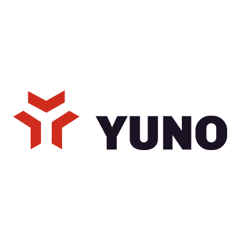
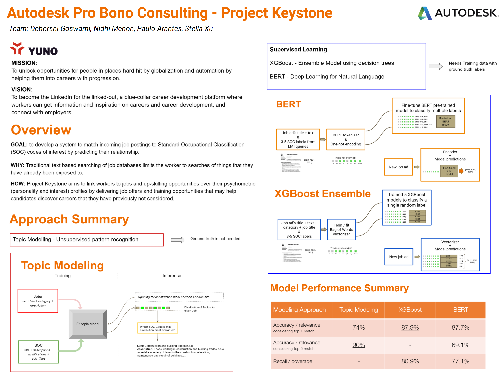

Yuno Technologies
ML support for edtech startup via Autodesk Foundation pro bono consulting
Story Behind the Project
Yuno Technologies was a London-based edtech startup with a compelling mission: to unlock opportunities for people in places hard hit by globalization and automation, by helping them into careers with progression. Their vision was to become the LinkedIn for the linked-out — a blue-collar career development platform where workers can get information and inspiration on careers, and connect with employers.
The specific problem we tackled for them — which they called Project Keystone — was matching incoming job postings to Standard Occupational Classification (SOC) codes based on a worker's psychometric profile, so that job recommendations could surface opportunities candidates had never previously considered. Traditional text-based job searching limits workers to what they already know; Yuno wanted to break through that ceiling.
Through the Autodesk Foundation's pro bono consulting program, I was part of a four-person team that brought ML expertise to help Yuno evaluate and build their matching system.
About
Pro bono ML consulting engagement to tackle Project Keystone — Yuno's initiative to develop a system that matches incoming job postings to SOC codes of interest by predicting their relationship to a worker's psychometric and interest profile. The team evaluated three approaches — topic modeling, XGBoost ensemble, and fine-tuned BERT — and produced a performance comparison to guide Yuno's technical direction.
My Role
I was one of four Autodesk pro bono consultants on the project, alongside Deborshi Goswami, Paulo Arantes, and Stella Xu. Together we researched, designed, implemented, and evaluated three distinct ML approaches for the job-to-SOC matching problem, and synthesized our findings into actionable recommendations for the Yuno team.
Key Details
- Topic Modeling — unsupervised pattern recognition requiring no ground truth labels; 74% accuracy on top-1 match, 90% on top-5
- XGBoost Ensemble — 5 XGBoost models trained on Bag of Words vectorization to classify SOC labels; 87.9% top-1 accuracy, 80.9% recall
- Fine-tuned BERT — pre-trained BERT model fine-tuned for multi-label SOC classification; 87.7% top-1 accuracy, 77.1% recall
- XGBoost emerged as the strongest performer across accuracy and recall metrics
Impact
Delivered a comparative analysis of three ML approaches with concrete performance metrics, giving Yuno a clear evidence-based path forward for their job matching system. The work contributed toward Yuno's goal of helping workers in overlooked communities discover career opportunities beyond what traditional job search would surface.
Technologies
Links
Note: Yuno Technologies appears to have shut down — their website (yuno.uk) was last archived in March 2023 and is no longer active.
Artifacts
